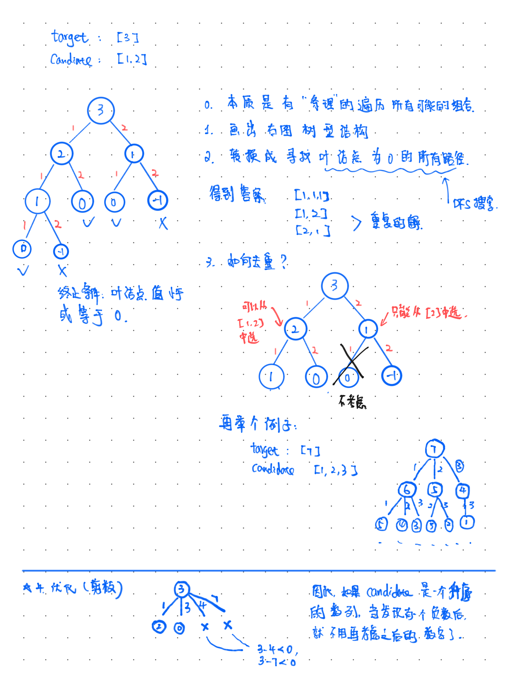

39. 组合总和
给定一个无重复元素的数组 candidates 和一个目标数 target ，找出 candidates 中所有可以使数字和为 target 的组合。
candidates 中的数字可以无限制重复被选取。
说明：
所有数字（包括 target）都是正整数。
解集不能包含重复的组合。
示例 1：
输入：candidates = [2,3,6,7], target = 7,
所求解集为：
[
[7],
[2,2,3]
]
示例 2：
输入：candidates = [2,3,5], target = 8,
所求解集为：
[
[2,2,2,2],
[2,3,3],
[3,5]
]
提示：
1 <= candidates.length <= 30
1 <= candidates[i] <= 200
candidate 中的每个元素都是独一无二的。
1 <= target <= 500
来源：力扣（LeetCode）
链接：https://leetcode-cn.com/problems/combination-sum
著作权归领扣网络所有。商业转载请联系官方授权，非商业转载请注明出处。
思路
第一接触回溯，看了几个思路和代码模板。然后再配合剪枝的思想。理解不够深刻，画图来解释下。以后做多了再来总结。

代码
1
2
3
4
5
6
7
8
9
10
11
12
13
14
15
16
17
18
19
20
21
22
23
24
|
class Solution:
def combinationSum(self, candidates: List[int], target: int) -> List[List[int]]:
self.n = len(candidates)
if self.n == 0:
return []
# pruning
candidates.sort()
self.candidates = candidates
self.ans = []
self.dfs(target, 0, [])
return self.ans
def dfs(self, target, start, path):
if target == 0:
self.ans.append(path.copy())
return
for i in range(start, self.n):
residual = target - self.candidates[i]
if residual < 0:
break
path.append(self.candidates[i])
self.dfs(residual, i, path)
path.pop()
return
|
复杂度
带剪枝的不太会分析。。 不剪枝，得到一个非常不tight的上界是
- 时间: 设
h = (target / min(candidates)) , n = len(candidates) 则 $O(n^h)$
- 空间: 不考虑返回数组的情况下，空间复杂度为栈的深度，所以为 $O(h)$.
题目: 40. 组合总和 II
给定一个数组 candidates 和一个目标数 target ，找出 candidates 中所有可以使数字和为 target 的组合。
candidates 中的每个数字在每个组合中只能使用一次。
说明：
所有数字（包括目标数）都是正整数。
解集不能包含重复的组合。
示例 1:
输入: candidates = [10,1,2,7,6,1,5], target = 8,
所求解集为:
[
[1, 7],
[1, 2, 5],
[2, 6],
[1, 1, 6]
]
示例 2:
输入: candidates = [2,5,2,1,2], target = 5,
所求解集为:
[
[1,2,2],
[5]
]
来源：力扣（LeetCode）
链接：https://leetcode-cn.com/problems/combination-sum-ii
著作权归领扣网络所有。商业转载请联系官方授权，非商业转载请注明出处。
思路1: 建立带频次的 candidates的hash表
与39的思路几乎一样。区别在于：
- 每个元素不能无限次使用
candidates里面有重复的
用一个dict可同时解决这两个问题。其中key是candidates中的元素, value是candidates中这个数字出现的频次。这样在建立回溯“树”时，通过检查当前元素剩余次数，来决定能否继续利用该元素接着建树。举个例子
如果 candidates = [2,3,2,5,6]
则可以建立一个dict ={"2": 2, "3":1, "5":1, "6":1}。
在建立回溯“树”时"2" 最多可以使用2次, “3”,“5”,“6"则最多能使用1次。
- 同时，为了达到剪枝的目的，我们需要
dict中key是升序排列。
代码
1
2
3
4
5
6
7
8
9
10
11
12
13
14
15
16
17
18
19
20
21
22
23
24
25
26
27
28
29
30
31
32
33
34
35
36
37
38
|
from collections import OrderedDict
class Solution:
def combinationSum2(self, candidates: List[int], target: int) -> List[List[int]]:
if not candidates:
return []
candidates.sort()
self.freqTable = OrderedDict()
self.ans = []
for num in candidates:
if num not in self.freqTable.keys():
self.freqTable[num] = 1
else:
self.freqTable[num] += 1
self.n_keys = len(self.freqTable)
self.key_list = [* self.freqTable]
self.dfs(target, [], 0)
return self.ans
def dfs(self, target, path, start):
if target == 0:
self.ans.append(path.copy())
return
for i in range(start, self.n_keys):
# 当前candidates 中需要考察的元素
num = self.key_list[i]
# 该元素还可以继续使用
if self.freqTable[num] > 0:
residual = target - num
# 剪枝
if residual < 0:
break
else:
self.freqTable[num] -= 1
path.append(num)
self.dfs(residual, path, i)
path.pop()
self.freqTable[num] += 1
return
|
复杂度
带剪枝的不太会分析。。 不剪枝，得到一个非常不tight的上界是
- 时间: 设
h 为树的深度, n = len(candidates) 则 $O(n^h)$
- 空间: 不考虑返回数组的情况下，空间复杂度为栈的深度，所以为 $O(h)$.
思路二：lucifer的代码
根本没必要玩花的，只需要保证每次从target中减去的数和上一次减去的数不一样就好了。然后将index 向右移动一位避免重复使用。【其实没说清楚，看代码吧。。】
1
2
3
4
5
6
7
8
9
10
11
12
13
14
15
16
17
18
19
20
21
22
23
24
25
26
27
28
29
30
31
32
33
34
35
|
class Solution:
def combinationSum2(self, candidates: List[int], target: int) -> List[List[int]]:
"""
与39题的区别是不能重用元素，而元素可能有重复；
不能重用好解决，回溯的index往下一个就行；
元素可能有重复，就让结果的去重麻烦一些；
"""
size = len(candidates)
if size == 0:
return []
# 还是先排序，主要是方便去重
candidates.sort()
path = []
res = []
self._find_path(candidates, path, res, target, 0, size)
return res
def _find_path(self, candidates, path, res, target, begin, size):
if target == 0:
res.append(path.copy())
else:
for i in range(begin, size):
left_num = target - candidates[i]
if left_num < 0:
break
# 如果存在重复的元素，前一个元素已经遍历了后一个元素与之后元素组合的所有可能
if i > begin and candidates[i] == candidates[i-1]:
continue
path.append(candidates[i])
# 开始的 index 往后移了一格
self._find_path(candidates, path, res, left_num, i+1, size)
path.pop()
|
47. 全排列II
给定一个可包含重复数字的序列 nums ，按任意顺序 返回所有不重复的全排列。
示例 1：
输入：nums = [1,1,2]
输出：
[[1,1,2],
[1,2,1],
[2,1,1]]
示例 2：
输入：nums = [1,2,3]
输出：[[1,2,3],[1,3,2],[2,1,3],[2,3,1],[3,1,2],[3,2,1]]
提示：
1 <= nums.length <= 8
-10 <= nums[i] <= 10
来源：力扣（LeetCode）
链接：https://leetcode-cn.com/problems/permutations-ii
著作权归领扣网络所有。商业转载请联系官方授权，非商业转载请注明出处。
思路

代码
1
2
3
4
5
6
7
8
9
10
11
12
13
14
15
16
17
18
19
20
21
22
23
24
25
26
27
28
|
from copy import deepcopy
class Solution:
def permuteUnique(self, nums: List[int]) -> List[List[int]]:
self.n = len(nums)
if self.n == 0:
return []
nums.sort()
self.nums = nums
self.ans = []
visited = [False] * self.n
self.dfs(0, [], visited)
return self.ans
def dfs(self, i, path, visited):
# i is the recursion depth counter
if i == self.n:
self.ans.append(deepcopy(path))
return
for j in range(self.n):
if visited[j]:
continue
if j > 0 and self.nums[j-1] == self.nums[j] and not visited[j-1]:
continue
visited[j] = True
path.append(self.nums[j])
self.dfs(i+1, path, visited)
visited[j] = False
path.pop(-1)
return
|
复杂度
- 时间复杂度 $O(n*n!)$
- 空间复杂度 $O(n)$